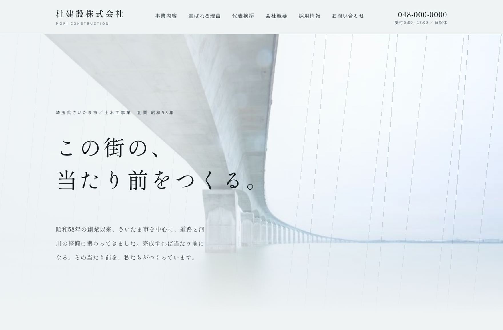
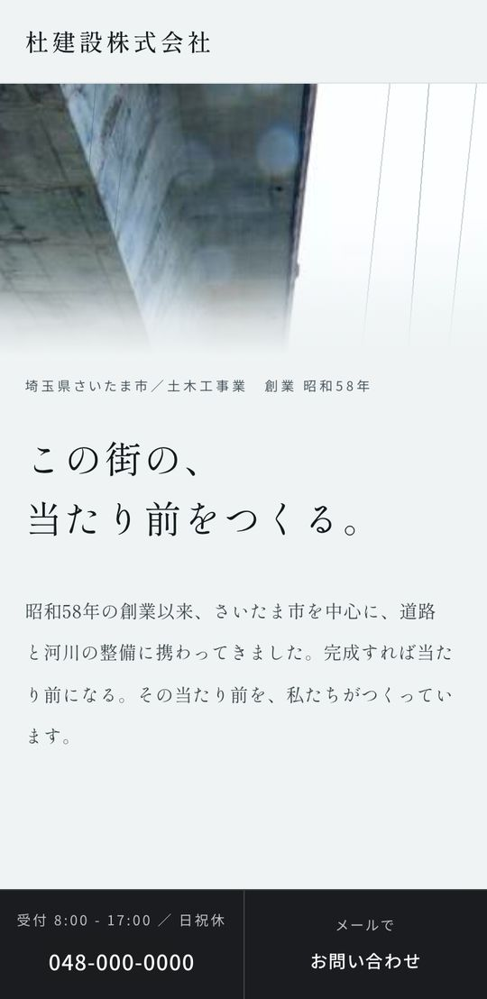
会社の仕事を、
伝わる一枚に。
杜工舎は、会社のホームページを1ページ、2週間ほどでつくるWebの工房です。仕事の写真、事業内容、会社概要、採用情報を、ひとつのページに整えます。
紹介を受けたお客さまも、応募を考える人も、会社のことを確かめられるように。御社の仕事と強みが伝わる入口をつくります。
- 料金1ページ98,000円（税込）買い切り・月々いただくものはありません。
- 納期2週間ほどご記入シートと写真をいただいてから
- 見本18業種の見本土木・測量・建築・設備・電気・造園・塗装・解体ほか
応募する人も、お客さまも、
まず会社名で検索します。
何も出てこなければ、そこで止まる ── 理由は3つ。
応募の、ひとつ手前で止まる
建築・土木・測量技術者の有効求人倍率は6.05倍。全職業の平均1.11倍の、およそ5.5倍です。そのうえ、転職した人の約6割が、入社を決めた会社の採用サイトを見ています。求人票を見て興味を持った方が、会社名で検索して何も出てこず、そこで止まる。応募という行動の、ひとつ手前の話です。
有効求人倍率は厚生労働省「一般職業紹介状況」令和8年5月・常用（除パート）。採用サイトの閲覧率は株式会社ベイジ「中途採用における採用サイト利用実態調査 2024年度版」（2024年、過去5年以内に転職活動をした社会人 3,317人）。
仕事の入口が細る
元請の審査、施主の下調べ、同業からの紹介。どれも会社名で検索するところから始まります。その場で何ができる会社か分からなければ、次の候補に移られます。実績が並んだ1枚が、その先へ進む入口になります。
検索の利用は総務省「令和7年 通信利用動向調査（世帯編）」（インターネット利用者の74.8%、60代75.7%）。公式サイトの確認は消費者庁「令和4年度 消費者意識基本調査」（インターネットで予約・購入するとき「公式サイトかどうか確認する」78.0%、n=3,311）。
AIが参考にする先に、自社が無い
ChatGPTなどのAIで調べる人が増えています。生成AIを使ったことがある人は5割を超えました。1年で約2倍に増えました。AIによる概要は検索で見つかるページを参考に示すので、会社の公式ページはその参照先の候補になります。
生成AIの利用経験は総務省「令和8年版 情報通信白書」（20〜69歳のネットモニター調査・年代ごと同数。52.2%、前年26.7%）。AIによる概要が参考にしたページを示すことは Google 検索セントラル「AI 機能とウェブサイト」（2025年12月更新）。
仕事が伝わる、
会社の一枚。
日本の美意識からとった五つの型です。飾りを削り、時代が変わっても古びないものだけを残しました。
18業種の見本から
御社に近いものをどれでも下の一覧から、御社に近い業種を押してください。その業種の5案が出ます。
デザインの想い
淡あわい
雨に洗われた白と、雨脚。
淡は、色や音がすこしだけ残っている状態を指す言葉です。言い切らないこと、すべてを見せないことを、日本は長く美しいとしてきました。その感覚を、雨上がりの空として一枚の紙にしました。地は雨に洗われた白、扉には斜めの雨脚が二枚だけ。文字は細い明朝で、飾りの罫は一本も引いていません。引かないと決めたので、節の変わり目は余白の広さだけで示しています。5案のなかで、余白をいちばん大きく取った型です。
向いている業種設計事務所や造園業など、丁寧さや情緒を静かに伝えたい会社に向いています。
玄げん
写真を、闇に沈めて。
玄は黒を指し、同時に、奥が深くて容易には見えないものを指します。幽玄の玄、玄人の玄。日本の美意識では、見せないことが、かえって深く見せることがあります。その考えを、扉の写真に当てました。写真の上に、濃さの変わらない一枚の膜を掛けてあります。濃くしたり薄くしたりせず、端から端まで同じ闇に沈めることで、写真は消えずに、静かに奥へ退がります。左に銀の細い軸を一本だけ通しました。本文と小見出しは等幅で組み、機械のような正確さを出しています。黒は一色ではなく、青みを含んだ階調です。
向いている業種設計事務所・塗装・建築（設計）など、意匠性と静かな凄みで選ばれたい会社に向いています。
雅みやび
灯のような墨に、金の細線。
雅は、荒々しさを削いだあとに残る美しさを指す言葉です。声を張らず、急がず、細部にだけ心を配る。宮廷の人びとが千年かけて磨いたその感覚を、夜の座敷のしつらえとして組みました。地は蝋燭の灯のような暖かい墨。金は面には使わず、細い線と小さな字にだけ置いています。写真は紙に貼らず、金の細い枠に掛けました。掛軸を床に掛けるのと同じで、断ち落とさないのは5案でこの型だけです。字間をゆったり取ったのは、急がずに読んでいただきたいからです。
向いている業種創業の古い建設会社・造園・社寺関係など、歴史と格式を前に出したい会社に向いています。
粋いき
藍の、細い縦線だけ。
粋は、飾りを削って、それでも残るもののことです。九鬼周造は『「いき」の構造』で、いきは横縞より縦縞を、太い縞より細い縞を選ぶと書きました。細いほうが、粋なのです。ですから、この型は細い縦の線だけで組みました。太い字はどこにも使わず、罫はすべて一本の細さにそろえています。色の面を張るのは、足もとの一か所だけ。何を足すかではなく、何を残すかで決めた型です。余計なものを持たない会社に向きます。
向いている業種電気工事・設備・測量・土木施工など、段取りの正確さと反応の速さで信頼を得る仕事に向いています。
理り
一本の筋を、通す。
理は、もともと玉（ぎょく）の筋目のことでした。石を磨くと現れる、まっすぐな目。そこから「物事の筋道」を指すようになり、日本語でも「筋を通す」「理にかなう」と使います。ですから、この型は一本の筋で組みました。題字・社名・節見出しを縦に通し、本文と連絡先は横書きのまま読みやすく保ちます。紙の色と、掛軸を思わせる表装。線は一本の細さで通し、色は紙と墨に、落款のひと粒だけ。飾りで目を引くのではなく、決めた筋を最後まで曲げないことで伝える型です。
向いている業種代々続く建築・土木・造園の会社や、社寺・石材・表具など、受け継いだ技術を仕事にしている方に向いています。
五案とも、載せる項目は同じです。会社概要も、事業内容も、採用情報も、すべて入ります。写真も文章も御社のものに入れ替わり、色も御社に合わせて無料でお変えしますので、同じ型を選んだ会社と並べても、同じサイトには見えません。
選んでいただくのは、かたちだけ。だから、1ページ 98,000円（税込）、2週間ほどでお渡しできます。
料金
前金はいただかず、
お支払いは完成品をご覧になってから。
ホームページをつくるとき
ホームページ作成
98,000円（税込）1ページ構成・スマートフォン対応。HTMLデータ一式をお渡しします。買い切りで、月々いただくものはありません。
公開設定の代行（ご希望の方のみ）
50,000円（税込）インターネット上に公開するところまで代行します。ご自身でできる場合は要りません。中身は下にご説明します。
公開の設定もご依頼の場合は、合わせて 148,000円（税込）、一度きりです。
あとから直すとき
文章の修正
1回20,000円（税込）レイアウトはそのままに、文章を差し替えます。
写真の入れ替え
1回20,000円（税込）お送りいただいた写真に差し替えます。
お渡ししたあと2週間のご確認の期間中は、1回に限り無償で直します。上の料金は、その期間を過ぎたあとのものです。
すべて税込。制作にあたって、これ以外にいただくものはありません。前金はいただかず、お支払いは完成品をご覧になってから。データは御社のものです。お支払いは銀行振込です。完成品をご覧いただいたあとに請求書をお送りしますので、発行から2週間以内にお振り込みください。
公開後は、御社名義でご契約いただくサーバーとドメインの利用料（あわせて年8,000〜20,000円ほど）だけがかかります。当方が受け取るものではありません。
公開したあと7日間は、表示の不具合（崩れ・文字化けなど）を無償で直します。
公開設定の代行とは
中身と、ご自身でなさる場合の流れ（11の手順）
お渡しするのはHTMLファイルです。ご自身でサーバーに置ける方は、この代行は必要ありません。「やり方が分からない」「触るのが不安」という場合に、インターネット上に公開するところまでをこちらで済ませます。
この一式をこちらで済ませて 50,000円（税込）、一度きりです。月々いただくものはありません。サーバーとドメインの利用料は御社のお支払いになります。目安はあわせて年8,000〜20,000円ほどです。御社名義の契約なので、ホームページは御社の手元に残ります。
ご自身でなさる場合は、おおよそこの流れです。
- サーバー契約
- 独自ドメイン取得
- Whois情報公開代行
- ネームサーバー変更
- DNS反映待ち（最大72時間）
- SSL証明書の発行
- FTP接続
- public_html へ設置
- .htaccess で www と https を統一
- Search Console 登録
- サイトマップ送信
順番と待ち時間が決まっていて、飛ばすとやり直しになります。反映を待たずにSSLを申し込むと発行に失敗し、置き場所を1階層まちがえるとページは表示されません。
ご依頼の流れ
ご記入シートと写真だけで
作れる設計にしています。
所要約10分
見本から、業種とデザインを選ぶ
淡・玄・雅・粋・理の5案から1つ。札を押すと見本の窓に映り、その場で下まで見られます。
所要約15分＋写真えらび
ご記入シートに記入する
エクセル1枚
業種を選ぶと記入例が出ます。書いて、写真を添えて送るだけ。写真はスマートフォンで撮ったもので十分です。5〜10枚あれば形になります。
シートの「希望デザイン」には とお書きください。
所要すぐ
書けたシートを送る
メールに添付するだけ
書けたら、写真といっしょに info@morikosha.com
へ送ってください。件名は何でも構いません。2営業日以内のご返信を心がけています。 所要2週間ほど
完成品をご覧いただく
ご記入シートと写真をいただいてから、2週間ほどで制作いたします。前金はいただかず、お支払いは完成品をご覧になってから。
御社の業種の記入例が、最初から入っています
上で選んだ業種に合わせたシートが開きます。そのままお使いいただいても、書き換えていただいても構いません。【必須】以外は空欄で構いません。空欄の項目は掲載しません。
会社案内・パンフレット作成
ホームページと同じ5つの案で、
手渡せる会社案内を。
A4・4ページの会社案内です（表紙／仕事の内容／選ばれる理由とごあいさつ／会社概要）。ホームページと同じ5つのデザイン案から近いものを選び、記入シートと写真を送っていただくと、御社の内容に直して PDF でお渡しします。営業先や採用の面接で手渡す一冊に。
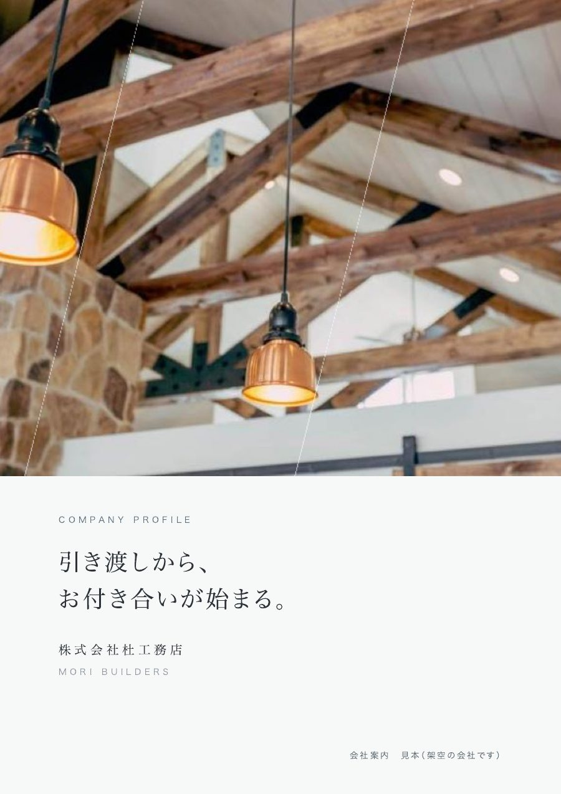
淡（あわい）雨に洗われた白と、雨脚。 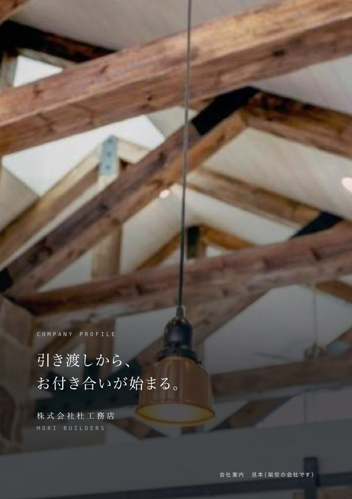
玄（げん）写真を、闇に沈めて。 雅（みやび）灯のような墨に、金の細線。 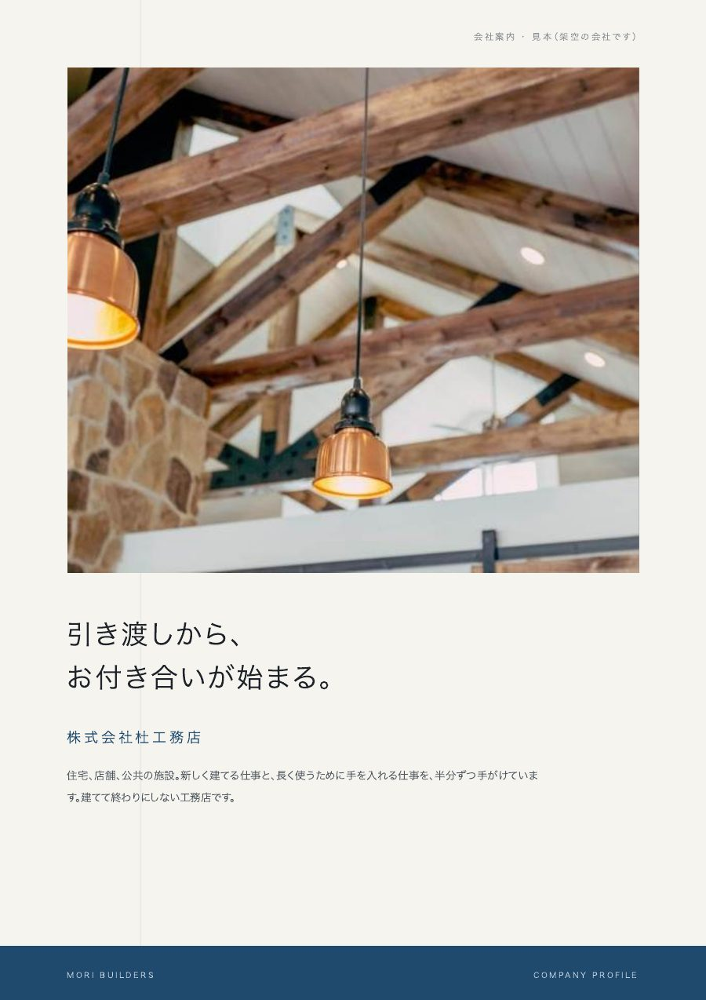
粋（いき）藍の、細い縦線だけ。 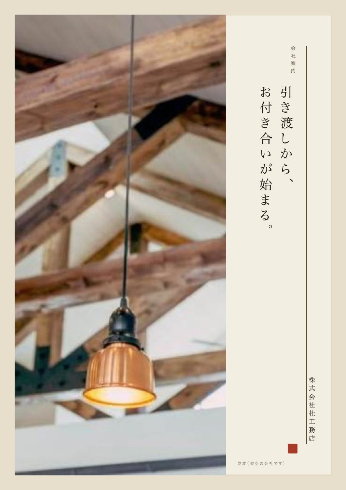
理（り）一本の筋を、通す。
中のページ（雅・建築の見本）
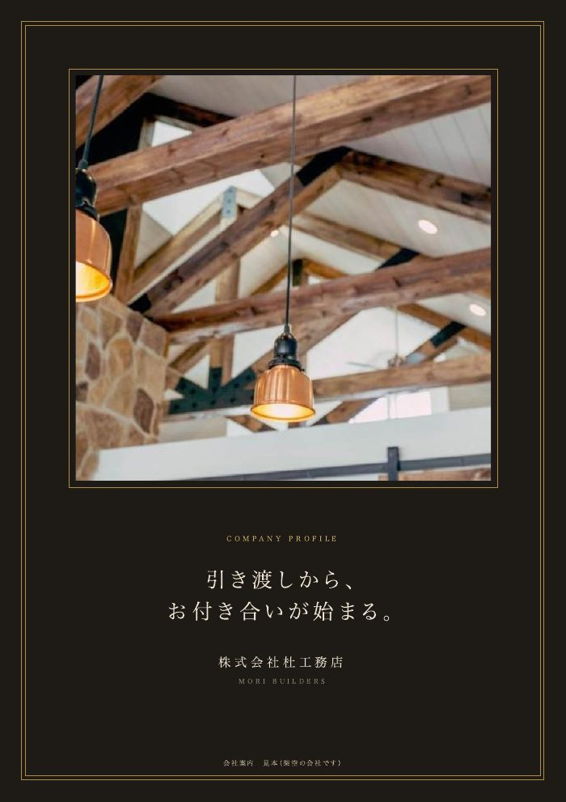
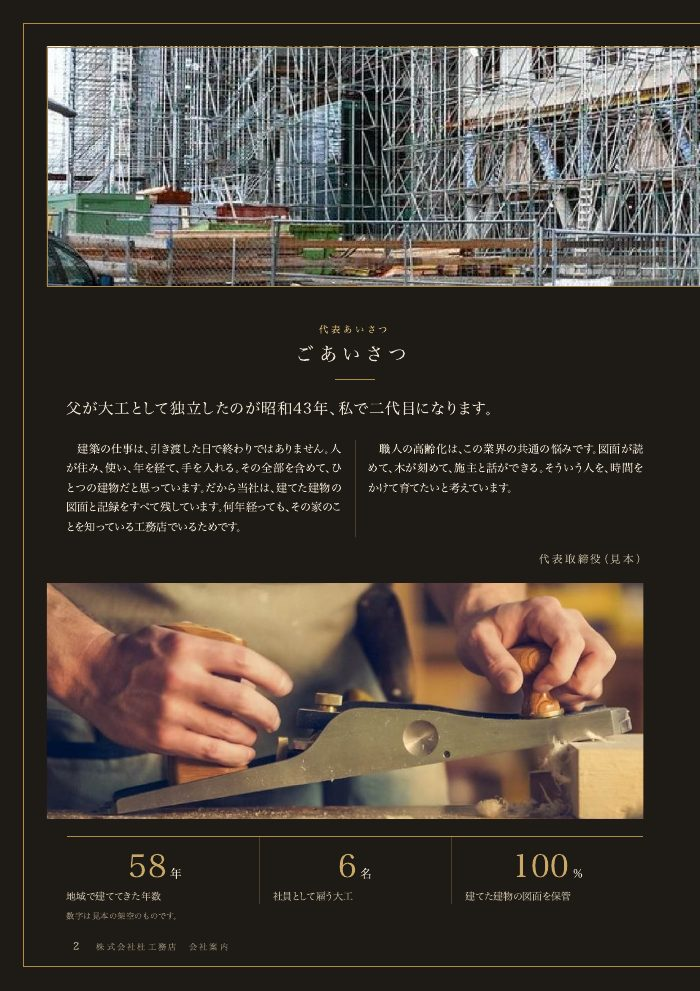
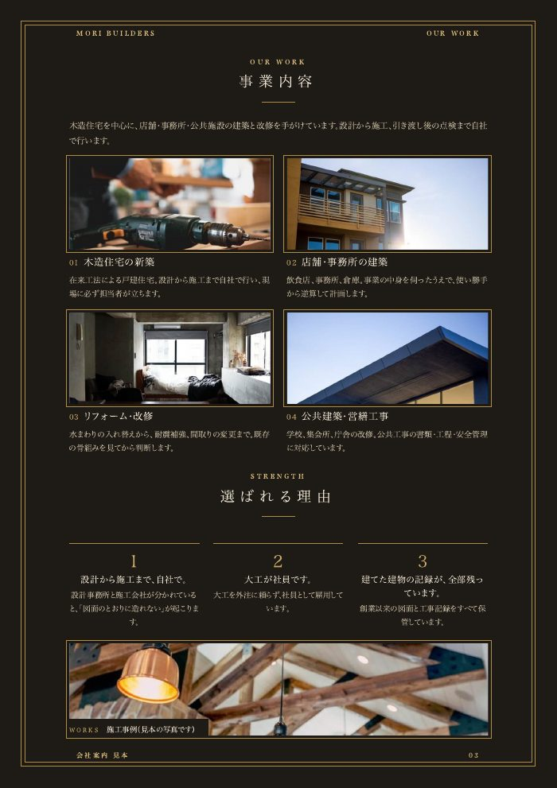
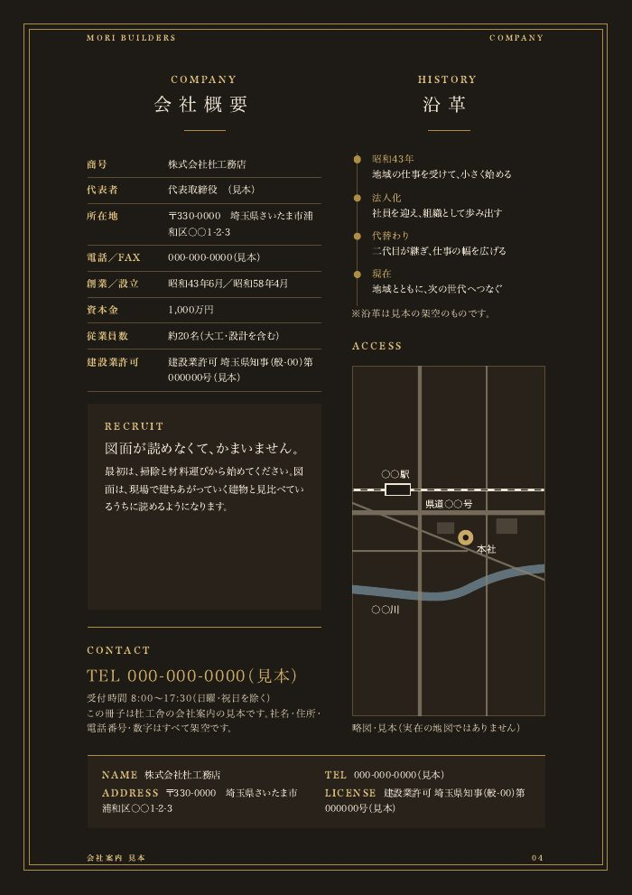
- 会社案内の作成A4・4ページ。5案から選んで御社の内容に直し、PDF と印刷用のデータでお渡しします
- 59,800円（税込）
- 印刷部数・紙・加工を伺ってから
- お見積り
見本の社名・人名・住所・電話番号は、すべて架空です。
商品比較サイトの作成
専門の人なら分かる選び分けを、
質問に答えるだけで選べるページに。
資材や道具のように、品番が多くて選び方の分かりにくい商品のためのページです。使う場所や目的をいくつかの質問で聞き、合う商品と数量の目安を出します。メーカーや販売店が持っている選び方の知識を、そのままお客さまに渡せる形にします。
- 初期制作198,000円（税込）商品の調査・質問の設計・ページ制作・埋め込みまで
- 保守月 9,800円商品情報の修正・稼働の確認・月1回ほどの改善
- 契約1年期間中は、同じ商品群の仕組みを競合の会社に出しません
代表プロフィール
足りないのは腕ではなく、
伝わる形。
上原 光瑛杜工舎 代表 ／ 1級土木施工管理技士補
経歴・資格
経歴
- 2018年
- 埼玉大学 工学部 建設工学科 卒業
- 2018年
- 埼玉県庁 入庁（土木技術職）公園の整備、道路・河川の工事監督と維持管理、令和元年東日本台風の災害復旧に従事
- 2024年度
- 担当した地すべり復旧工事が 全建賞（災害枠・都市部門）を受賞（令和6年度）
- 2026年
- 埼玉県庁 退職（8年間勤務）
- 2026年
- 農業法人 入社（在籍中）
- 2026年
- 杜工舎 開業（さいたま市）
資格・講習
- 1級土木施工管理技士補1級土木施工管理技術検定 第一次検定 合格
- 準中型自動車免許5t限定
- 刈払機取扱作業者安全衛生教育 修了
- チェーンソーによる伐木等の業務特別教育 修了
1級土木施工管理技士の第二次検定、ビオトープ管理士2級（計画部門）、土壌医検定2級などの受験を続けています。現場の判断材料を増やすためで、資格そのものを売りにはしていません。
- 屋号
- 杜工舎（もりこうしゃ）
- 代表
- 上原 光瑛
- 資格
- 1級土木施工管理技士補
- info@morikosha.com
- 所在地
- 埼玉県さいたま市大宮区高鼻町３丁目
2018年3月に埼玉大学工学部建設工学科を卒業し、同年4月から8年間、埼玉県庁の土木技術職として、道路・河川・斜面・公園といった社会インフラの工事監督と維持管理、災害復旧に携わりました。
仕事は、設計の照査から積算、入札後の現場監督、完成検査まで。担当した工事のひとつに、令和元年東日本台風で崩れた斜面の地すべり復旧があります。現場の担当として工事を進め、この工事は令和6年度 全建賞（災害枠・都市部門）に選ばれました。発注する側に8年いたので、工事がどう進み、書類とお金のどこで手が止まるかを、体で知っています。
2026年3月に県庁を退職し、いまは農業法人に籍を置いて畑に出ています。建設の現場でも、農業の現場でも、同じ言葉を聞きました。「人が来ない」「いい仕事をしているのに、外から見えない」。仕事の中身は確かなのに、それを外から確かめる手立てがない ── 足りないのは腕ではなく、伝わる形だと考えるようになりました。
杜工舎（もりこうしゃ）を開業しました。会社の仕事を1ページのホームページに整えます。御社からお預かりした写真・原稿・会社情報と、公表されている一次情報をもとに制作します。統計などを引用するときは、出典と、いつの時点のものかを画面に出します。分からないことは、分からないと書きます。
現場の仕事を、写真と言葉で伝える ── それが杜工舎の仕事です。
杜工舎をはじめた想い
県庁で8年間、工事を発注し、監督する側にいました。現場で顔を合わせた会社の多くが、若い人が入ってこないという同じ悩みを抱えていました。
いま籍を置いている農業も、造園の現場も同じです。人手が足りない。募集をかけても来ない。その現実を、身近で感じています。
仕事や商品・サービスを探している人に届く入口をつくり、社会に喜びが増えることを目指して杜工舎を開業しました。
仕事の進め方
事実だけを載せます
御社からいただいた情報と、公表されている資料だけで組みます。埋まらない項目は、想像で埋めずに載せません。
分かることと、分からないことを分けます
「必ず」「保証します」とは書きません。数字を出すときは、出どころと時点をそばに書きます。
相手の言葉で書きます
専門用語を並べず、やることの順番で書きます。読む人は、その業界の外にいる人だからです。
値引き、紹介料、補助金を前提にしたご提案はしていません。価格は誰に対しても同じです。
よくあるご質問
メールでのご質問は、
いつでも歓迎です。
写真がありません。それでも作れますか？
作れます。スマートフォンで撮ったもので十分です。現場の様子、重機、完成した構造物、事務所や社屋。このあたりが5〜10枚あれば形になります。きれいに撮る必要はありません。むしろ、実際の現場の写真のほうが伝わります。
ご用意が難しい部分は、サンプルで使っている写真（商用利用できるフリー素材）をそのまま使えます。
文章が苦手です。
ご記入シートで業種をお選びいただくと、その業種のサンプルページで実際に使っている文章が、記入欄の右側に表示されます。それを参考に、御社のことに書き換えてご記入ください。各項目には記入のワンポイントアドバイスを添えています。空欄のままご返送いただいた項目は掲載いたしません。
打ち合わせなしで、本当にできますか？
はい。ご記入シートと写真だけで作れる設計にしています。「何度も訪問してご要望をうかがう」という進め方をしていない、という意味ですので、メールでのご質問はいつでも歓迎です。
毎月の費用はかかりますか？
ホームページ制作について、当方にお支払いいただく月々の費用はありません。制作費のお支払いで完了です。
公開後にかかるのは、御社名義でご契約いただくサーバーとドメインの利用料だけです（あわせて年8,000〜20,000円ほど）。これは御社から各社へ直接お支払いいただくもので、当方が受け取るものではありません。
文言を直したい、記事を足したい、といったご相談は、そのつどお受けします。使わなければ費用は発生しません。
他社と同じデザインになりませんか？
同じ型を複数の会社さまにご提供しています。それが、この価格の理由です。ただし、写真・文章・会社情報はすべて御社のものに入れ替わり、配色も御社に合わせて無料で変えられますので、並べて見比べても同じサイトには見えません。
埼玉県外ですが、頼めますか？
お受けできます。やり取りはメールとデータで完結しますので、全国どちらからでもご依頼いただけます。
サンプルの文章は変えられますか？
変えられます。レイアウトはそのままに、文章はすべて御社の内容で作ります。
お渡ししたあと2週間のご確認の期間中は、1回に限り無償で直します。その期間を過ぎたあとは、文章の修正・写真の入れ替えを1回20,000円（税込）で承ります。
お問い合わせ
ご質問だけでも、
構いません。
制作内容や、写真・原稿の準備について、メールでご相談いただけます。
お問い合わせには、会社名・業種・現在のホームページの有無をお書き添えください。気になるデザインがあれば、その名前も添えていただけます。
1ページ98,000円（税込）前金なし・2週間ほど
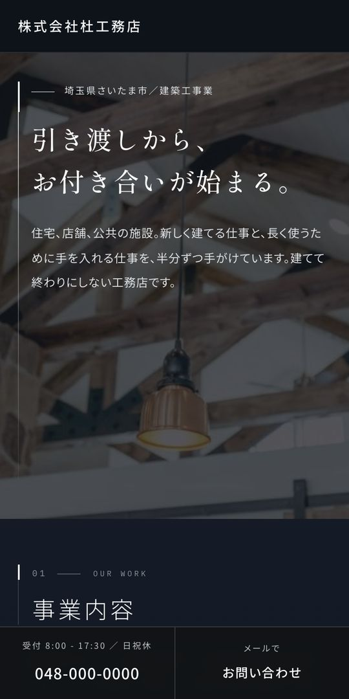
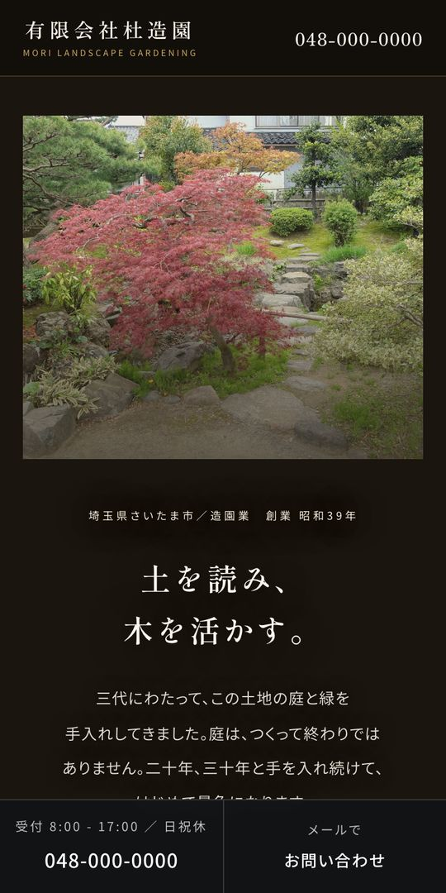
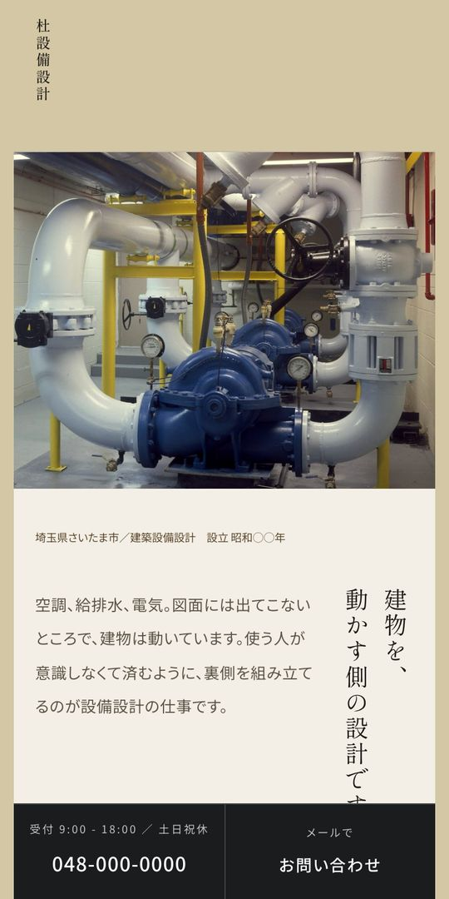